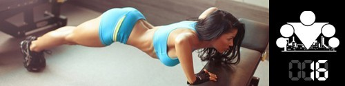
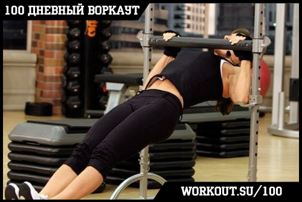
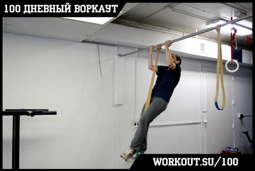
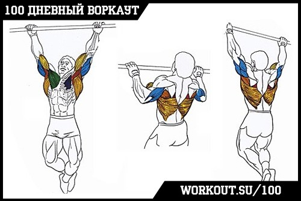
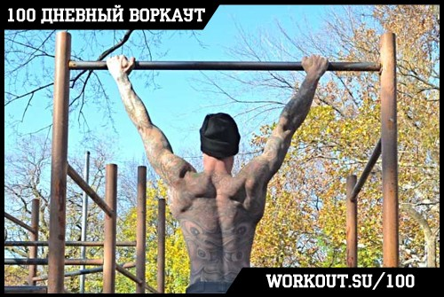

100 Дневный воркаут
<==== Вернуться к оглавлению
День 16. Как научиться подтягиваться с нуля

Сегодня я подготовил специальный инфо-пост, посвященный всем тем, кто пока ещё не может полноценно подтягиваться на турнике, но очень хочет научиться и уже движется к своему первому подтягиванию!
На эту тему у нас так же подготовлен отдельный выпуск видео-блога, смотрим!
Начну с самого главного. Единственная причина по которой у вас сейчас не получается подтянуться заключается в том, что у вас недостаточно сил для выполнения этого упражнения (и оно действительно нелегкое для новичка!). По сути ваши мышцы просто не могут поднять ваше тело до перекладины. Поэтому, чтобы сделать их сильнее, мы будем использовать различные подводящие упражнения.
Что такое подводящие упражнения? В общем случае это облегченные варианты выполнения упражнения, которые по одному или нескольким параметрам позволяют уменьшить нагрузку. Таким образом, если вы не можете выполнить целевое упражнение, потому что оно слишком тяжелое, то вы можете выполнять подводящие упражнения, чтобы подготовить себя к нему. Для наглядности возьмем подтягивания (ведь вы хотите научиться подтягиваться, верно?) для рассмотрения и школьный курс Физики нам в помощники.
Если посмотреть на подтягивания со стороны, то мы видим, что человек сначала тянет свое тело вверх, потом опускает его вниз. Теперь посмотрим на подтягивания с точки зрения Физики. Если вы хорошо учились в школе, то знаете, что работа это произведение массы на расстояние. Поэтому работа, которую вам нужно совершить, чтобы подтянуть свое тело равна произведению массы вашего тела на расстояние (амплитуду движения). Соответственно, чтобы придумать подводящие упражнения, нужно придумать такие варианты выполнения, чтобы уменьшить один из двух параметров, либо массу тела, либо расстояние, которое нужно пройти.
Метод А: уменьшаем массу тела
Суть всех упражнений данного метода заключается в том, чтобы уменьшить вес тела, а значит и нагрузку и работу, которую нужно проделать. Достигать этого мы будем за счет переноса части веса на ноги (то есть мы не будем держать полностью вес вашего тела на руках, как при обычных подтягиваниях). Вот несколько примеров (о некоторых из них мы уже говорили в рамках инфо-поста про
Подтягивания
):
Австралийские подтягивания

Я не знаю, какое отношение они имеют к родине сумчатых прыгунов, но основная их идея заключается в том, чтобы найти не очень высокую перекладину и выполнять подтягивания в горизонтальной плоскости (с определенным наклоном), касаясь ногами пола. В зависимости от высоты перекладины и угла под которым вы выполняете упражнение, вы можете снимать больше или меньше нагрузки, подбирая её под уровень вашей подготовки.
Стоит отметить тот факт, что это упражнение по биомеханике отличается от обычных подтягиваний потому что тяга происходит в горизонтальной плоскости, а не в вертикальной. Но оно отлично подходит для новичков и для отработки техники подтягиваний!
Подтягивания с помощью стула
Другим очень эффективным, хотя и требующим определенной сноровки, способом научиться подтягиваться, являются подтягивания с помощью стула (как на картинке). И чтобы это сработало, нужно следовать двум рекомендациям:
1. От тренировки к тренировке нужно стараться переносить как можно больше усилий на руки и мышцы спины, а силой ног пользоваться как можно меньше; поскольку в этом варианте вы сами контролируете нагрузку, то важно не халтурить и стараться, в первую очередь, тянуть именно спиной и руками.
2. Тренировать подтягивания нужно с помощью большого тренировочного объема (и
100 дневный воркаут
отлично согласуется с этим), благодаря чему ваши мышцы будут находиться под нагрузкой большее время, а значит вы быстрее научитесь подтягиваться.
Подтягивания с помощью резиновых петель

Это упражнение, по своей сути, аналогично предыдущему за тем исключением, что при подтягиваниях с помощью резиновых петель степень нагрузки/поддержки определяется характеристиками резиновой петли, а не вами. Но здесь так же главное не халтурить, и если вы легко можете выполнить 10 подтягиваний с помощью петли заданного сопротивления, следует перейти на более слабую.
Метод Б: уменьшаем расстояние
Суть всех упражнений данного метода заключается в том, чтобы уменьшить работу за счет сокращения расстояния. Достигать этого мы будем за счет разделения упражнения на несколько частей и тренировки этих частей по отдельности:
Негативные подтягивания

В любом движении есть две фазы -
позитивная
(когда вы напрягаете мышцы) и
негативная
(когда вы расслабляете мышцы). Соответственно, если пока что вы не можете сделать обе фазы подтягивания (т.е. поднимать себя вверх и опускать себя вниз), то можно дополнительно тренировать негативную фазу. Найдите турник такой высоты, чтобы вы могли запрыгивать на него и ваш подбородок был выше перекладины, после чего старайтесь как можно медленнее опускаться вниз.
Частичные повторения
На самом деле можно пойти ещё дальше, и разделить подтягивания не на 2 части:позитивная и негативная), а на 4 части: позитивная с прямых рук до угла 90 градусов в локтях, позитивная с угла 90 градусов в локтях до подбородка над турником, негативная с подбородка над турником до угла 90 градусов в локтях, негативная с угла 90 градусов в локтях до прямых рук.
В идеале, конечно же, нужно выполнять упражнение в полную амплитуду, но это требует определенной силы и уровня подготовки, поэтому не нужно расстраиваться или переживать, если пока вы можете выполнить подтягивание на 1/2 или 3/4 от полной амплитуды. Главное - тренируйтесь и со временем сила придет!
Метод В: секрет мастеров перекладины
Если в формуле два параметра, то может быть всего два метода, как их можно изменять, верно? Неверно! Всегда есть третий вариант! Представьте, что вам нужно поднять тяжелый рояль на второй этаж жилого здания. Конечно, можно корячиться в одиночку, и, наверняка, со временем у вас это получится, но что если воспользоваться помощью друга? Вдвоем ведь наверняка быстрее управитесь! На этом и строится третий подход:
Подтягивания хватом снизу

Для многих новичков отдельной проблемой является сам вис на турнике на своих руках, поэтому если у вас такая проблема имеет место быть, то я бы рекомендовал вам в конце вашей тренировки (после всех кругов!) добавить простой вис на перекладине по 30-120 (в зависимости от уровня вашей подготовки) секунд в качестве укрепляющего упражнения для хвата. Можете разбить упражнение на подходы, если не получается выполнить за один.
Советы напоследок
Всех этих упражнений должно быть достаточно для того, чтобы научиться полноценно подтягиваться, однако, мне бы хотелось осветить ещё два момента, которые могут серьезно облегчить и ускорить ваше обучение.
Момент №1:
Если вы хотите сразу научиться правильной технике подтягивания и облегчить себе процесс обучения, то каждый раз, когда вы делаете подтягивания, представляйте, что
вы тянете перекладину к себе
. Не себя тянете к перекладине, а именно перекладину к себе! Чтобы было проще понять о чем я говорю, вспомните как вы двигали мебель или какой-нибудь тяжелый предмет, в частности когда двигали его к себе. Вы хватались за диван (для примера) двумя руками и тянули его к себе (в основном за счет спины и немного помогая руками). Именно такую технику и нужно использовать при подтягиваниях! Надеюсь вы поняли, что я имею ввиду)))
Момент №2:
Приведенные способы тренировки подтягиваний значительно более эффективны, чем какие-либо тренажеры (тот же Гравитрон), потому что включают в работу все те мышцы, которые задействуются и при обычных подтягиваниях. Вы учитесь координировать работу своих мышц, фактически, в условиях, максимально приближенных к реальности, с тем лишь отличием, что нагрузка меньше вашего собственного веса (пока что!).
Вот вроде бы все и рассказал, ну а если возникли вопросы, то пишите :)
======> День 17. Мозоли на руках